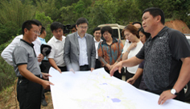
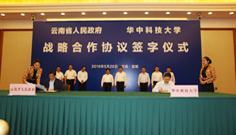
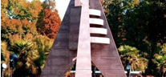

通知公告
更多>>
学校要闻

- “两学一做”学习教育专题
- 2016-05-10
- 更多>>
- 
- 聚焦精准 我校推进定点扶贫工作
- 2016-05-25
- 按照中央要求，我校对口云南省临沧市临翔区定点扶贫。5月21日至22日，校长丁烈云带领工作组赴临沧市临翔区开展定点扶贫工作。
- 
- 我校与云南省签订战略合作协议
- 2016-05-25
- 为加强与云南省合作，服务国家“一带一路”发展战略，5月20日，我校与云南省签订战略合作协议。
综合新闻
-
校友张晓仑任东方电气集团总经理
2016-05-25
5月25日，中国东方电气集团有限公司召开中层以上管理人员大会。受中组部领导委托，中组部有关干部局负责同志宣布了党中央、国务院关于中国东方电气集团有限公司主要领导变动的决定：张晓仑同志任中国东方电气集团有限公司总经理。校党委书记路钢、校长丁烈云致信表示祝贺。
-
光电信息学院师生国际知名期刊连续发表高水平论文
2016-05-25
集成电路与系统是现代电子信息科技的核心技术，是国家综合实力的重要标志。光电信息学院“超大规模集成电路与系统研究中心”主任邹雪城教授带领的研发团队，于2015年、2016年在微电子器件及集成电路领域顶级期刊上发表10余篇高水平论文。
-
经济学院中国金融研究中心成立
2016-05-24
5月21日，经济学院中国金融研究中心成立仪式暨2016金融市场发展前沿系列讲座第一期在校举行。据介绍，为推动学校金融研究水平提升，加强对中国金融当前重大理论和现实问题的关切，经济学院特成立中国金融研究中心，并邀请香港交易首席中国经济学家、中国银行业协会首席经济学家巴曙松担任中心主任。
学生·学者·学术
-
- 向楠教授：中医药学里的“调和之道”
- 2016-05-23
- 5月5日，湖北中医药大学的向楠教授做客第2115期人文讲座，介绍中医“和”文化以及亚健康的相关知识，将科学与人文有机地结合在一起，意在帮助大家更健康地生活。
-
- 校“三标”张远航： 做事就要“一根筋”
- 2016-05-16
- 来自光电信息学院2012级的张远航，完成过全程马拉松，拿过赛灵斯电子设计大赛一等奖、“九同方”杯集成电路设计大赛一等奖、“华大九天”杯集成电路设计大赛三等奖，更凭借优异成绩被评为校“三好学生标兵”。 ...
-
- 张晓芒教授：逻辑是思维的工具
- 2016-05-11
- “‘逻辑’一词是人们沟通中最常使用的词汇之一，人人都在说逻辑，但是并不真正了解逻辑。逻辑是什么？逻辑有什么用？怎么运用逻辑？”南开大学张晓芒教授做客人文讲座，将听众带入神奇的逻辑世界。
专题专栏
-
党的建设
严明政治纪律，严守政治规矩，需要坚持“五个必须”，即：必须维护党中央权威，在任何时候任何情况下都要在思想上政治上行动上同党中央保持高度一致；必须维护党的团结，坚持五湖四海，团结一切忠实于党的同志...
-
理论学习
中国共产党第十八届中央委员会第五次全体会议，于2015年10月26日至29日在北京举行。全会听取和讨论了习近平受中央政治局委托作的工作...
- 
-
现代大学制度
深化学校综合改革，加快具有中国特色的现代大学制度建设，着力破除体制机制障碍，加快构建充满活力、富有效率、更加开放、有利于学校科学发展的体制机制，推动世界一流大学和一流学科的建设。
-
学风建设
学校秉承建设“学生、学者、学术的大学”教育思想，坚持“育人为本、创新是魂、责任以行”的办学理念，打造“一流教学、一流本科”，大力实施“以学生为中心的教育”，采取多种举措，深化教育教学改革，扎实推...
常用链接
图书馆
校史馆
同济医学院
官方微信
移动应用
通知公告
邮箱登录
信息公开
官方微博
白云黄鹤